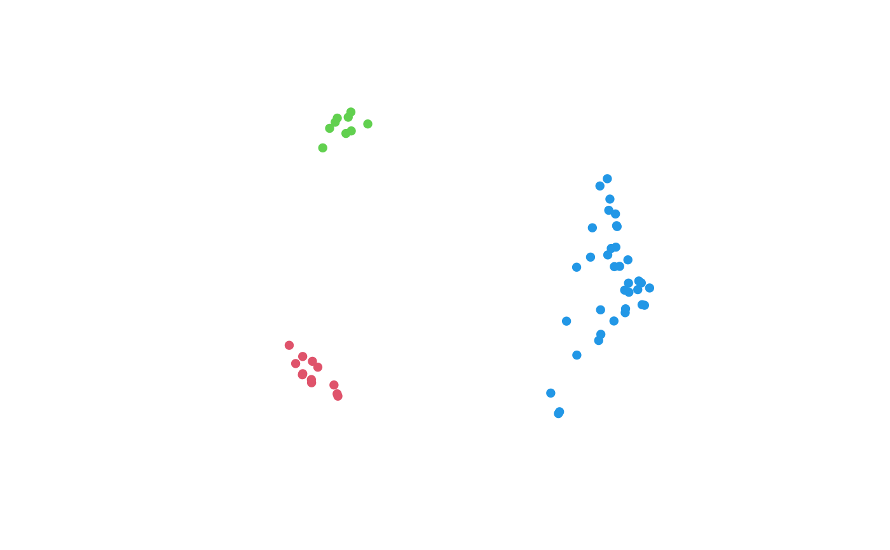
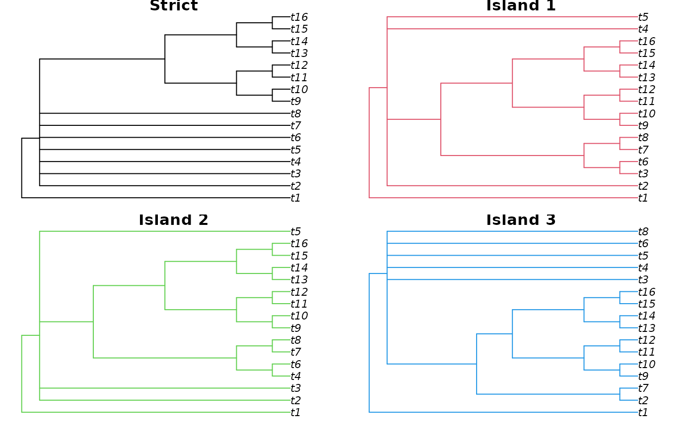

Islands() assigns a set of objects to islands, such that all elements
within an island can form a connected graph in which each edge is no longer
than threshold distance units Silva AS, Wilkinson M (2021).
“On Defining and Finding Islands of Trees and Mitigating Large Island Bias.”
Systematic Biology, 70(6), 1282–1294.
doi:10.1093/sysbio/syab015
.
.
Arguments
- D
Square matrix or
distobject containing Euclidean distances between data points.- threshold
Elements greater than
thresholddistance units will not be assigned to the same island.- dense
Logical; if
FALSE, each island will be named according to the index of its lowest-indexed member; ifTRUE, each island will be numbered sequentially from1, ordered by the index of the lowest-indexed member.- smallest
Integer; Islands comprising no more than
smallestelements will be assigned to islandNA.
See also
Other tree space functions:
MSTSegments(),
MapTrees(),
MappingQuality(),
SpectralEigens(),
cluster-statistics,
median.multiPhylo()
Examples
library("TreeTools", quietly = TRUE)
# Generate a set of trees
trees <- as.phylo(as.TreeNumber(BalancedTree(16)) + c(-(40:20), 70:105), 16)
# Calculate distances between trees
distances <- ClusteringInfoDist(trees)
summary(distances)
#> Min. 1st Qu. Median Mean 3rd Qu. Max.
#> 0.8997 2.8945 4.5822 4.3967 6.1634 7.0885
# Assign trees to islands
isle <- Islands(distances, quantile(distances, 0.1))
table(isle)
#> isle
#> 1 2 3
#> 12 9 36
# Indicate island membership on 2D mapping of tree distances
mapping <- cmdscale(distances, 2)
plot(mapping, col = isle + 1,
asp = 1, # Preserve aspect ratio - do not distort distances
ann = FALSE, axes = FALSE, # Don't label axes: dimensions are meaningless)
pch = 16 # Plotting character: Filled circle
)

# Compare strict consensus with island consensus trees
oPar <- par(mfrow = c(2, 2), mai = rep(0.1, 4))
plot(Consensus(trees), main = "Strict")
plot(Consensus(trees[isle == 1]), edge.col = 2, main = "Island 1")
plot(Consensus(trees[isle == 2]), edge.col = 3, main = "Island 2")
plot(Consensus(trees[isle == 3]), edge.col = 4, main = "Island 3")

# Restore graphical parameters
par(oPar)